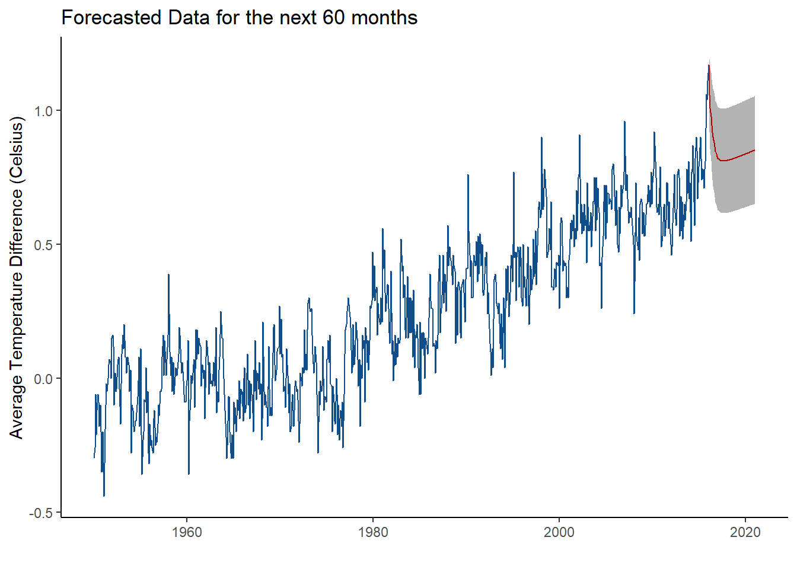

Chapter 3 Forecasting
Now that we covered the fundamentals of time series analysis, we finally get to immerse ourselves in forecasting!
3.1 What is Forecasting?
Forecasting is simply the process of using past data values to make educated predictions on future data values. As stated in the last chapter, the time series should be stationary if you want to make well-informed predicitons. This can be done by fitting an arima model by using the auto.plot() function in the forecast package. Then, all you have to do is apply the forecast() function to get your prediction! The forecast() function can take in another argument along with your model. You can also input h, the number of predicted time periods you want. This function is very practical for real world analysis of time series.
Forecasting is done in so many fields around the world. You will often see forecasting in the business and financial field for companies that want to predict their profit or expenses. Forecasting can be used to predict stock prices as well! You will see it in the environemntal field, such as this current example with global warming. The economic field also heavily uses time series and forecasting to predict how societies will behave. This is just a few examples of numerous time series and forecasting uses in the real world.
3.2 Example: Global Temperature
Let’s forecast with our global temperature data now. As we saw, we fit the data with a SARIMA(2,1,3)(1,0,0)12. Now that we have our model, we can simply use the forecast(ts, h) function from the forecast package. As mentioned, h represents the number of observations we want to predict into the future. Let’s say we want to predict 5 years into the future. Since our data ended in December 2016, the next 5 years will include each month from January 2017 to December 2022. Moreover, since our observations were every month, we can set h to \(12 * 5 = 60\). Let’s see what happens.
forecast.data <- forecast(best.model, h = 60)
autoplot(forecast.data, ts.colour = "dodgerblue4", predict.colour = "red") +
ggtitle("Forecasted Data for the next 60 months") +
ylab("Average Temperature Difference (Celsius)") +
theme_classic()
The original time series is depicted in dark blue and the predicted data is represented by the red line. The grey shading around the predicted values represents the 95% confidence interval. This simply states that we are 95% percent confident that the data point at time t will fall between two bounds. You can change the confidence bands in the forecast function and even view the confidence interval bounds in the forecasted object.
What can you take away from this forecasted model?
It looks as it the average temperature difference will drop in 2017; however, it seems that it will gradually rise again. This is fairly consistent in what we see in the rest of the data. It seems in the past 66 years, the temperatue decreases every once in a while, but then gradually rises. This looks like it’s a fairly good prediction.
There are many other methods to create a model for your time series data. You can also check which is the best predictor by looking at the mean absolute percentage error (MAPE). This is beyond the scope of this short tutorial, but I encourage you to learn more about it here.